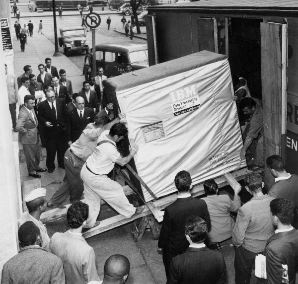

Microservicios con docker
Del servicio a los microservicios
¿Qué está pasando?
Breve historia y "loca" historia...
...contada a ritmo de Benny Hill
Almacenamiento
Comunicaciones
Comunicaciones
Buscadores
Ordenadores
Telefonia móvil
VideoClub
Y de pronto todo empezó a correr...en el mundo Hardware
- Bajan los precios
- Suben la producción
- PC's compatibles
- Smartphones, Tablets, Wearable...
Y de pronto todo empezó a correr...en el mundo Software
- Software de consumo
- La "guerra" de los sistemas operativos
- Empresas basando su negocio en la red
- Software Libre
Y de pronto todo empezó a correr...en el mundo Telco
- Comunicaciones intercontinentales
- Anchos de banda en expansión
- Salto de lo analogico a lo digital
- Internet
De lo "antiguo" a lo "nuevo"
(conversaciones con mi tio Juli)
Del monolito a los microservicios
El Monolito
- "EL servidor"
- Los stacks de desarrollo
- Java
- Oracle
- LAMP (Linux+Apache+Mysql+PHP)
- El equipo
- Desarrolladores, Sysadmins, DBA's
Los Microservicios
De "EL servidor" a...
- CPD's everywhere!
- Virtualización
- Containerización
- PAAS, IAAS, SAAS
Los Microservicios
Del Stack clásico a...
Los Microservicios
Del equipo...
- Los equipos
- Un producto, muchos proyectos
- Nuevos roles: DevOps
- Nuevas metodologias
Los Microservicios
(en 2 artículos)
- Microservicios (James Lewis y Martin Fowler - 2014)
- Adopting Microservices at Netflix: Lessons for Architectural Design


Cockcroft defines a microservices architecture as a service-oriented architecture composed of loosely coupled elements that have bounded contexts.
Buenas prácticas de Cockcroft
- Crea un data-store por cada microservicio
- Mantén el código al mismo nivel de madurez
- Build diferentes por cada microservicio
- Despliega en contenedores
- Trata a los servidores como stateless
Talk nerdy to me...

¿Qué es tenemos hoy para jugar?
- Docker 1.9.0
- docker-machine
- docker-swarm
- docker-compose
- Consul
- Registrator
- Nginx
- Unas apps
¿Que vamos a hacer?
- Un cluster de docker-swarm
- Autodescubrimiento de apps
- Balanceo de las apps
- Dimensionamiento dinámico
Creamos una maquina local
docker-machine create -d virtualbox devel
eval "$(docker-machine env devel)"
SWARM_TOKEN=$(docker run swarm create)
echo $SWARM_TOKEN
Creamos una node swarm master
docker-machine create -d virtualbox --swarm --swarm-master \
--swarm-discovery token://$SWARM_TOKEN \
master
Creamos un contenedor de consul en master
eval "$(docker-machine env master)"
CONSUL_MASTER_IP=$(docker-machine ip master)
docker run -d --name consul -h consul \
-p $CONSUL_MASTER_IP:8300:8300 \
-p $CONSUL_MASTER_IP:8301:8301 \
-p $CONSUL_MASTER_IP:8301:8301/udp \
-p $CONSUL_MASTER_IP:8302:8302 \
-p $CONSUL_MASTER_IP:8302:8302/udp \
-p $CONSUL_MASTER_IP:8400:8400 \
-p $CONSUL_MASTER_IP:8500:8500 \
-p $CONSUL_MASTER_IP:53:53 \
-p $CONSUL_MASTER_IP:53:53/udp \
progrium/consul \
-server \
-advertise $CONSUL_MASTER_IP \
-bootstrap
Creamos una node swarm master
REGISTRATOR_MASTER_IP=$(docker-machine ip master)
docker run -d --name registrator -h registrator \
-v /var/run/docker.sock:/tmp/docker.sock \
gliderlabs/registrator \
consul://$CONSUL_MASTER_IP:8500 \
-ip $REGISTRATOR_MASTER_IP
Creamos un balanceador con nginx y consul
docker build -t microservice/nginx-consul dockers/nginx-consul
docker run -d --name nginx-consul -p 80:80 -p 443:443 --dns $CONSUL_MASTER_IP \
microservice/nginx-consul
Creamos 2 nodos swarm slave
docker-machine create -d virtualbox --swarm \
--swarm-discovery token://$SWARM_TOKEN \
nodo-1
docker-machine create -d virtualbox --swarm \
--swarm-discovery token://$SWARM_TOKEN \
nodo-2
Montamos consul en nodo-1
eval "$(docker-machine env nodo-1)"
NODO1_IP=$(docker-machine ip nodo-1)
docker run --name consul1 -d -h consul1 \
-p $NODE1_IP:8300:8300 \
-p $NODE1_IP:8301:8301 \
-p $NODE1_IP:8301:8301/udp \
-p $NODE1_IP:8302:8302 \
-p $NODE1_IP:8302:8302/udp \
-p $NODE1_IP:8400:8400 \
-p $NODE1_IP:8500:8500 \
-p $NODE1_IP:53:53 \
-p $NODE1_IP:53:53/udp \
progrium/consul \
-server \
-advertise $NODO1_IP \
-join $CONSUL_MASTER_IP
Montamos consul en nodo-2
eval "$(docker-machine env nodo-2)"
NODO2_IP=$(docker-machine ip nodo-2)
docker run --name consul2 -d -h consul2 \
-p $NODE2_IP:8300:8300 \
-p $NODE2_IP:8301:8301 \
-p $NODE2_IP:8301:8301/udp \
-p $NODE2_IP:8302:8302 \
-p $NODE2_IP:8302:8302/udp \
-p $NODE2_IP:8400:8400 \
-p $NODE2_IP:8500:8500 \
-p $NODE2_IP:53:53 \
-p $NODE2_IP:53:53/udp \
progrium/consul \
-server \
-advertise $NODO2_IP \
-join $CONSUL_MASTER_IP
Montamos registrator en nodo-1
eval "$(docker-machine env nodo-1)"
docker run --name registrator-1 -d -h registrator-1 \
-v /var/run/docker.sock:/tmp/docker.sock \
gliderlabs/registrator \
consul://$NODO1_IP:8500 \
-ip $NODO1_IP
Montamos registrator en nodo-2
eval "$(docker-machine env nodo-2)"
docker run --name registrator-2 -d -h registrator-2 \
-v /var/run/docker.sock:/tmp/docker.sock \
gliderlabs/registrator \
consul://$NODO2_IP:8500 \
-ip $NODO2_IP
Subimos los dockers a los nodos
SWARM_NODES=("master" "nodo-1" "nodo-2" )
for NODE_NAME in "${SWARM_NODES[@]}"; do
DOCKER_FILES=$(find $(pwd dockers) -name Dockerfile | grep -v nginx-consul)
for DOCKER_FILE in $DOCKER_FILES; do
eval "$(docker-machine env $NODE_NAME)"
DOCKER_NAME=$(basename $(dirname $DOCKER_FILE))
docker build -t microservice/$DOCKER_NAME $(dirname $DOCKER_FILE)
done
done
Nos conectamos al master
eval "$(docker-machine env --swarm master)"
docker info
¿Preguntas?
Gracias!
Puedes consultar la presentación en esta URL
Puedes consultar la presentación en esta URL
http://telemaco.github.io/docker-microservices

Enlaces
- Web de docker
- Documentación docker
- Docker Registry
- Consul
- Registrator
- Openshine